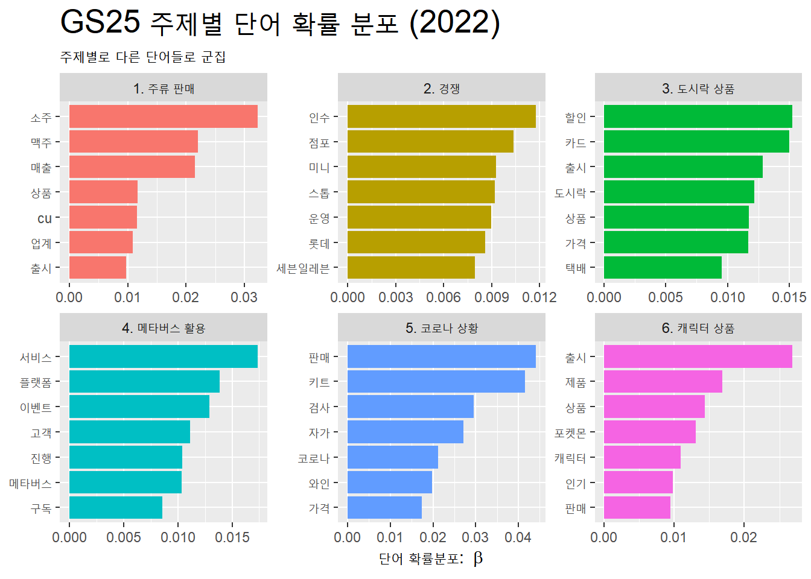

주제 선정 이유 : 2022년 10월 한국기업평판연구소에 따르면, 1위 CU, 2위 세븐일레븐, 4위 GS25로 편의점 브랜드 순위를 발표하였다. 브랜드 순위가 낮은 GS25에 효과적인 평판 관리를 제안하고자 이를 중심으로 추가 분석을 하려고 한다. 이전 보고서 “언론보도 분석을 통한 편의점 평판 비교 분석”을 통해 GS25가 ’동네 주요 기점’으로 성장하려는 것을 확인하였다. 이에 대해 GS25가 꾸준히 위와 같은 이미지를 형성하기 위해 어떤 노력들을 하였는지, 이러한 행동에 대해 어떠한 평판이 형성되었는지 확인하고자 한다. 그렇다면 GS25가 앞으로 펼쳐야 할 평판 관리에 대해 좀 더 의미있는 제안을 할 수 있을 것이다.
GS25(2021) 긍정 이미지 : ‘이벤트’, ‘할인’, ‘인기’, ‘혜택’. ‘고급’, ‘최저가’
GS25(2021) 부정 이미지 : ‘혐오’는 GS25의 홍보포스터가 남성 혐오 논란을 일으키면서 높은 비중을 차지함. ’부담’, ‘화재’ 단어의 경우 부정적인 단어를 활용하여 마케팅을 하면서 나타남. ‘편의점 택배 부담없이 GS25, 반값택배’, ‘화재 시, GS25 소화기 제공’ 문구 활용을 볼 수 있음. ’장애인’의 경우, ’늘봄스토어’를 통해 장애인 취업 기회를 제공한다는 내용임.
GS25(2022) 긍정 이미지 : ‘인기’, ‘할인’, ‘이벤트’, ‘혜택’. ‘맛집’, ‘최저가’
GS25(2022) 부정 이미지 : ‘부담’, ‘화재’ 단어의 경우 부정적인 단어를 활용하여 마케팅을 하면서 나타남. ‘편의점 택배 부담없이 GS25, 반값택배’, ‘화재 시, GS25 소화기 제공’ 문구 활용을 볼 수 있음. ’피해’의 경우, ’국내 최초 가맹점 사기 피해 보상 보험 지원’과 ’남혐 논란, GS25피해 CU로’라는 내용으로 살펴볼 수 있음.
Building corpus...
Converting to Lower Case...
Removing punctuation...
Removing stopwords...
Removing numbers...
Stemming...
Creating Output...
Code
out <-prepDocuments(processed$documents, processed$vocab, processed$meta, lower.thresh =0)docs <- out$documentsvocab <- out$vocabmeta <- out$metatopicN <-c(3, 10)#storage <- searchK(out$documents, out$vocab, K = topicN)GS25_2022_stm_fit <-stm(documents = docs,vocab = vocab,K =6,data = meta,max.em.its =75,init.type ="Spectral",seed =25,verbose = F )#labelTopics(GS25_stm_fit)GS25_2022_topic_name <-tibble(topic =1:6,name =c("1. 주류 판매","2. 경쟁","3. 도시락 상품","4. 메타버스 활용","5. 코로나 상황","6. 캐릭터 상품"))GS25_2022_td_beta <- GS25_2022_stm_fit %>%tidy(matrix ='beta') GS25_2022_topic_name <- GS25_2022_td_beta %>%group_by(topic) %>%slice_max(beta, n =7) %>%left_join(GS25_2022_topic_name, by ="topic")GS25_2022_topic_name %>%ggplot(aes(x = beta, y =reorder_within(term, beta, name), # 각 주제별로 재정렬fill = name)) +geom_col(show.legend = F) +facet_wrap(~name, scales ="free") +scale_y_reordered() +# 재정렬한 y축의 값 설정labs(x =expression("단어 확률분포: "~beta), y =NULL,title ="GS25 주제별 단어 확률 분포 (2022)",subtitle ="주제별로 다른 단어들로 군집") +theme(plot.title =element_text(size =20))

7. 관련보도 상위 주제어
1) GS25(2021)
Code
GS25_2021_td_gamma <- GS25_2021_stm_fit %>%tidy(matrix ="gamma") GS25_2021_top_terms <-GS25_2021_td_beta %>%group_by(topic) %>%slice_max(beta, n =5) %>%select(topic, term) %>%summarise(terms =str_flatten(term, collapse =", ")) GS25_2021_gamma_terms <-GS25_2021_td_gamma %>%group_by(topic) %>%summarise(gamma =mean(gamma)) %>%left_join(GS25_2021_top_terms, by ='topic') %>%left_join(GS25_2021_topic_name, by ='topic')GS25_2021_gamma_terms %>%ggplot(aes(x = gamma, y =reorder(name, gamma), fill = name)) +geom_col(show.legend = F) +geom_text(aes(label =round(gamma, 2)), # 소수점 2자리 hjust =1.15) +# 라벨을 막대도표 안쪽으로 이동geom_text(aes(label = terms), hjust =-0.05) +# 단어를 막대도표 바깥으로 이동#scale_x_continuous(expand = c(0, 0), # x축 막대 위치를 Y축쪽으로 조정# limit = c(0, 1)) + # x축 범위 설정labs(x =expression("문서 확률분포"~(gamma)), y =NULL,title ="GS25 관련보도 상위 주제어 (2021)",subtitle ="주제별로 기여도가 높은 단어 중심") +theme(plot.title =element_text(size =20))
주류 판매가 주요 매출 제품으로 파악됨.
페이 결제, 택배 선결제를 바탕으로 ’결제 방식’을 개선하였고, 배달 서비스를 시작하였으며, LG유플러스와 협약하여 AI, 빅데이터 솔루션을 도입하고 LG 유플러스 멤버십 대상 구독 서비스를 선보이기도 하였다. 즉, 2021년의 경우, GS25는 편의점의 기능을 개선하는데 초점을 둠.
남성 혐오 논란이 브랜드에 막대한 부정적인 영향을 미쳤음을 확인할 있음.
2) GS25(2022)
Code
GS25_2022_td_gamma <- GS25_2022_stm_fit %>%tidy(matrix ="gamma") GS25_2022_top_terms <-GS25_2022_td_beta %>%group_by(topic) %>%slice_max(beta, n =5) %>%select(topic, term) %>%summarise(terms =str_flatten(term, collapse =", ")) GS25_2022_gamma_terms <-GS25_2022_td_gamma %>%group_by(topic) %>%summarise(gamma =mean(gamma)) %>%left_join(GS25_2022_top_terms, by ='topic') %>%left_join(GS25_2022_topic_name, by ='topic')GS25_2022_gamma_terms %>%ggplot(aes(x = gamma, y =reorder(name, gamma), fill = name)) +geom_col(show.legend = F) +geom_text(aes(label =round(gamma, 2)), # 소수점 2자리 hjust =1.15) +# 라벨을 막대도표 안쪽으로 이동geom_text(aes(label = terms), hjust =-0.05) +# 단어를 막대도표 바깥으로 이동#scale_x_continuous(expand = c(0, 0), # x축 막대 위치를 Y축쪽으로 조정# limit = c(0, 1)) + # x축 범위 설정labs(x =expression("문서 확률분포"~(gamma)), y =NULL,title ="GS25 관련보도 상위 주제어 (2022)",subtitle ="주제별로 기여도가 높은 단어 중심") +theme(plot.title =element_text(size =20))
작년과 동일하게 주류판매에 대한 키워드 결집이 높고, 이전과 다르게 ‘소주’ 키워드가 증가함.
세븐일레븐이 미니스톱을 인수한 내용이 많이 언급됨으로 보아 세븐일레븐의 몸집 증가가 기존에 자리잡고 있던 CU, GS25에 큰 영향을 미치는 것으로 보임.
제품 다양화, 할인 이벤트 등을 시행함으로써 도시락 상품에 집중함.
장기적인 관점에서, 로블록스(메타버스 플랫폼) 게임을 개발하여 MZ세대와 알파세대를 대상으로 미래 소비층을 확보하려고 함.
8. 결론
1) 평판 비교
2021년에는 편의점 기능에 대한 개선에 초점을 맞추었다면 2022녀에는 회사 및 제품 브랜딩에 더 초점을 맞추는 모습.
2021년에는 LG유플러스 협약을 맺어 AI, 빅데이터 기반 운영을 시도하였으며 결제 방식 다양화 및 편리화, 배송 서비스 운영 등 환경적인 변화에 빠르게 대응하려는 것을 알 수 있음.
2022년에는 경쟁사의 인수 상황이 높게 언급되면서 편의점 경쟁이 치열해지고 있음을 암시. 동시에 원소주, 포켓몬과의 콜라보레이션으로 긍정적인 이슈를 얻고 있으며 도시락 상품 다양화로 GS25만의 특색을 만들어가려고 함을 알 수 있음.
2) 평판 전략 방향
GS25는 기능적인 측면과 상품 브랜딩에 있어서는 명확한 컨셉과 개선의 모습을 보이고 있는 부정적인 기업 브랜딩에 대한 대응은 미약하게 나타나고 있음.
이전 보고서 “언론보도 분석을 통한 편의점 평판 비교 분석”에 따르면 GS25가 ‘동네 주요 기점’ 역할로서 장애인 취업 지원, 미아 방지 캠페인, 소화기 제공 등 노력하는 모습들이 타 편의점과 큰 차이점을 보였었는데 그에 비해 평판에 효과적으로 활용되지 못했다고 판단됨. 긍정적인 기업 이미지를 형성하기 위해서는 앞의 내용을 효과적으로 활용할 필요가 있음.
2022년이 되어 편의점들의 사업확장 및 기업 인수를 통해 경쟁이 더 심화되리라 보고 있는데, 이 과정에서 GS25가 편의점 트렌드에 부합하게 평판관리를 하고 있는지도 살펴볼 필요가 있음.
Source Code
---title: "언론보도 분석을 통한 GS25의 연도별 평판 비교분석"subtitle: "2021. 01. 01. ~ 2021. 10. 31. / 2022. 01. 01. ~ 2022. 10. 31."format: html: code-fold: true code-tools: trueeditor: visualauthor: 언론홍보학과 4학년 김수진(2018102101)title-block-style: defaulttitle-block-banner: "#c7c3c3"date: 2022. 11. 01.---### 1. 개요#### 1) 분석주제 및 선정 이유- 분석 주제 : 언론보도 분석을 통한 GS25의 연도별 평판 비교 분석- 주제 선정 이유 : 2022년 10월 한국기업평판연구소에 따르면, 1위 CU, 2위 세븐일레븐, 4위 GS25로 편의점 브랜드 순위를 발표하였다. 브랜드 순위가 낮은 GS25에 효과적인 평판 관리를 제안하고자 이를 중심으로 추가 분석을 하려고 한다. 이전 보고서 "언론보도 분석을 통한 편의점 평판 비교 분석"을 통해 GS25가 '동네 주요 기점'으로 성장하려는 것을 확인하였다. 이에 대해 GS25가 꾸준히 위와 같은 이미지를 형성하기 위해 어떤 노력들을 하였는지, 이러한 행동에 대해 어떠한 평판이 형성되었는지 확인하고자 한다. 그렇다면 GS25가 앞으로 펼쳐야 할 평판 관리에 대해 좀 더 의미있는 제안을 할 수 있을 것이다.#### 2) 자료분석 방법- 자료 유형 : 뉴스 (정치, 사회, 스포츠 뉴스 제외)- 자료 출처 : 빅카인즈- 자료수집 1) GS25 (2021) - 검색어 : ((GS25) OR (지에스25) OR (gs25) OR (지에스이십오)) - 자료 기간 : 2021. 01. 01. \~ 2021. 10. 31. (약 10개월) - 총 3883건의 기사 2) GS25 (2022) - 검색어 : ((GS25) OR (지에스25) OR (gs25) OR (지에스이십오)) - 자료 기간 : 2022. 01. 01. \~ 2022. 10. 31. (약 10개월) - 총 3532건의 기사### 2. 자료 수집#### 1) 패키지 설치```{r}#| label: 패키지 설치#| echo: true#| warning: false#| output: falsepackage_list <-c("tidyverse", "tidytext", "readxl", "kableExtra", "multilinguer", "RcppMeCab", "KoNLP", "lubridate", "tidylo", "stm", "reshape2", "dplyr", "ggplot2", "stringr", "rvest", "wordcloud", "tm", "VennDiagram", "gt")#package_list_installed <- package_list %in% installed.packages()[,"Package"]# new_pkg <- package_list[!package_list_installed]# if(length(new_pkg)) install.packages(new_pkg)lapply(package_list, require, character.only =TRUE)```#### 2) 데이터셋 수집```{r}#| label: 데이터셋 수집#| echo: true#| warning: falseGS25_2021_df <- readxl::read_excel("GS25_21_data.xlsx") %>%select(제목, 본문)GS25_2022_df <- readxl::read_excel("GS25_22_data.xlsx") %>%select(제목, 본문)```### 3. 자료분석-총빈도#### 1) GS25 (2021. 01. 01. \~ 2021. 10. 31. / 약 10개월)```{r}#| label: 총빈도_GS25 (기간a)#| echo: true#| warning: falseGS25_2021_df <- GS25_2021_df %>%distinct(제목, .keep_all = T) %>%mutate(ID =factor(row_number())) %>%mutate(label ="0") %>%unite(제목, 본문, col ="text", sep =" ") %>%mutate(text =str_squish(text))GS25_2021_tk <- GS25_2021_df %>%mutate(text =str_remove_all(text, "[^(\\w+|\\s)]")) %>%unnest_tokens(word, text, token = extractNoun, drop = F) %>%count(word, sort = T)GS25_2021_tk <-GS25_2021_tk %>%filter(!word %in%c("gs", "gs25", "리테일", "기자", "편의점")) %>%filter(str_detect(word, "[:alpha:]+")) %>%filter(str_length(word) >1) %>%slice_max(n, n =15) %>%mutate(word =reorder(word, n))GS25_2021_tk %>%ggplot(aes(word, n)) +geom_col() +coord_flip() +labs(title ="GS25 총빈도 (2021)")```#### 2) GS25 (2022. 01. 01. \~ 2022. 10. 31. / 약 10개월)```{r}#| label: 총빈도_GS25 (기간b)#| echo: true#| warning: falseGS25_2022_df <- GS25_2022_df %>%distinct(제목, .keep_all = T) %>%mutate(ID =factor(row_number())) %>%mutate(label ="0") %>%unite(제목, 본문, col ="text", sep =" ") %>%mutate(text =str_squish(text))GS25_2022_tk <- GS25_2022_df %>%mutate(text =str_remove_all(text, "[^(\\w+|\\s)]")) %>%unnest_tokens(word, text, token = extractNoun, drop = F) %>%count(word, sort = T)GS25_2022_tk <-GS25_2022_tk %>%filter(!word %in%c("gs", "gs25", "리테일", "기자", "편의점")) %>%filter(str_detect(word, "[:alpha:]+")) %>%filter(str_length(word) >1) %>%slice_max(n, n =15) %>%mutate(word =reorder(word, n))GS25_2022_tk %>%ggplot(aes(word, n)) +geom_col() +coord_flip() +labs(title ="GS25 총빈도 (2022)")```#### 3) 분석- 주류와 관련하여 2021년에는 '맥주'가, 2022년에는 '소주'가 총빈도가 높에 나타남.- 2021년에는 '배달', '온라인' 등 비대면 관련 서비스 키워드에 눈의 띔.- 2021년과 2022년을 비교하였을 때, CU와 함게 언급이 더 많아졌음을 알 수 있음.### 4. 자료분석-상대빈도```{r}#| label: 상대빈도_세팅#| echo: true#| warning: falseweighted_log_odds_df <-bind_rows(GS25_2021_tk, GS25_2022_tk, .id ="party") %>%bind_log_odds(set = party,feature = word, n = n) %>%arrange(-log_odds_weighted)``````{r}#| label: 상대빈도#| echo: true#| warning: falselibrary(gt)library(dplyr)GS25_2021.2022_df <-bind_cols( weighted_log_odds_df %>%group_by(party =ifelse(party ==1, "GS25(2021)", "GS25(2022)")) %>%arrange(party) %>%select(-party) %>%head(15), weighted_log_odds_df %>%group_by(party =ifelse(party ==1, "GS25(2021)", "GS25(2022)")) %>%arrange(desc(party)) %>%select(-party) %>%head(15) ) GS25_2021.2022_df <- GS25_2021.2022_df[-c(1,5)]GS25_2021.2022_df %>%gt() %>%tab_header("상대적으로 많이 사용한 단어" ) %>%tab_spanner(label ="GS25 (2021)",columns =1:3 ) %>%tab_spanner(label ="GS25 (2022)",columns =4:6 ) %>%cols_label(word...2 ="명사",n...3 ="빈도",log_odds_weighted...4 ="가중상대빈도",word...6 ="명사",n...7 ="빈도",log_odds_weighted...8 ="가중상대빈도" ) %>%fmt_number(columns =starts_with("log"), decimals =2 )```### 5. 감정분석#### 1) 사전 데이터 프레임 만들기```{r}#| label: 감정분석_사전 데이터 프레임1#| echo: true#| warning: false# pkg_v <- c("tidyverse", "tidytext", "epubr", "RcppMeCab", "KoNLP" )# lapply(pkg_v, require, ch = T)# url_v <- "https://github.com/park1200656/KnuSentiLex/archive/refs/heads/master.zip"# dest_v <- "data/knusenti.zip"# download.file(url = url_v, destfile = dest_v, mode = "wb")# unzip("knusenti.zip", exdir=outPath)``````{r}#| label: 감정분석_사전 데이터 프레임2#| echo: true#| warning: falsesenti_name_v <-list.files("data/knusenti/KnuSentiLex-master/.")[9]senti_dic_df <-read_tsv(str_c("data/knusenti/KnuSentiLex-master/", senti_name_v), col_names = F)senti_dic_df <- senti_dic_df %>%rename(word = X1, sScore = X2)knu_dic_df <- senti_dic_df %>%filter(!is.na(sScore))```#### 2) GS25(2021)```{r}#| label: 감정분석_GS25(2021)#| echo: true#| warning: falseGS25_2021_senti_df <- GS25_2021_df %>%unnest_tokens(word, text, token = extractNoun) %>%inner_join(knu_dic_df) %>%count(word, sScore, sort = T) %>%filter(str_length(word) >1) %>%mutate(word =reorder(word, n)) %>%slice_head(n =20)GS25_2021_senti_df %>%ggplot() +geom_col(aes(n, word, fill = sScore), show.legend = F) +labs(title ="GS25 감정빈도 분석 (2021)")``````{r}#| label: 긍정어, 부정어_GS25(2021)#| echo: true#| warning: falseGS25_2021_df %>%unnest_tokens(word, text) %>%left_join(knu_dic_df) %>%mutate(sScore =ifelse(sScore >=1, "긍정",ifelse(sScore <=-1, "부정", "중립"))) %>%count(sScore)GS25_2021_df %>%unnest_tokens(word, text, token = extractNoun) %>%inner_join(knu_dic_df) %>%mutate(emotion =ifelse(sScore >0, "긍정", ifelse(sScore <0, "부정", "중립"))) %>%mutate(label =ifelse(sScore >0, "1", ifelse(sScore <0, "0", "2"))) %>%filter(label !="중립") %>%count(word, emotion, label, sort = T) %>%filter(str_length(word) >1) %>%group_by(label =ifelse(label >0, "긍정", "부정")) %>%slice_head(n =15) %>%ggplot(aes(x = n,y =reorder(word, n), fill = label)) +geom_col(show.legend = F) +facet_wrap(~label, scale ="free") +labs(title ="GS25 긍정어 부정어 (2021)")```- GS25(2021) 긍정 이미지 : '이벤트', '할인', '인기', '혜택'. '고급', '최저가'- GS25(2021) 부정 이미지 : '혐오'는 GS25의 홍보포스터가 남성 혐오 논란을 일으키면서 높은 비중을 차지함. '부담', '화재' 단어의 경우 부정적인 단어를 활용하여 마케팅을 하면서 나타남. '편의점 택배 부담없이 GS25, 반값택배', '화재 시, GS25 소화기 제공' 문구 활용을 볼 수 있음. '장애인'의 경우, '늘봄스토어'를 통해 장애인 취업 기회를 제공한다는 내용임.#### 3) GS25(2022)```{r}#| label: 감정분석_GS25(2022)#| echo: true#| warning: falseGS25_2022_senti_df <- GS25_2022_df %>%unnest_tokens(word, text, token = extractNoun) %>%inner_join(knu_dic_df) %>%count(word, sScore, sort = T) %>%filter(str_length(word) >1) %>%mutate(word =reorder(word, n)) %>%slice_head(n =20)GS25_2022_senti_df %>%ggplot() +geom_col(aes(n, word, fill = sScore), show.legend = F) +labs(title ="GS25 감정빈도 분석 (2022)")``````{r}#| label: 긍정어, 부정어_GS25(2022)#| echo: true#| warning: falseGS25_2022_df %>%unnest_tokens(word, text) %>%left_join(knu_dic_df) %>%mutate(sScore =ifelse(sScore >=1, "긍정",ifelse(sScore <=-1, "부정", "중립"))) %>%count(sScore)GS25_2022_df %>%unnest_tokens(word, text, token = extractNoun) %>%inner_join(knu_dic_df) %>%mutate(emotion =ifelse(sScore >0, "긍정", ifelse(sScore <0, "부정", "중립"))) %>%mutate(label =ifelse(sScore >0, "1", ifelse(sScore <0, "0", "2"))) %>%filter(label !="중립") %>%count(word, emotion, label, sort = T) %>%filter(str_length(word) >1) %>%group_by(label =ifelse(label >0, "긍정", "부정")) %>%slice_head(n =15) %>%ggplot(aes(x = n,y =reorder(word, n), fill = label)) +geom_col(show.legend = F) +facet_wrap(~label, scale ="free") +labs(title ="GS25 긍정어 부정어 (2022)")```- GS25(2022) 긍정 이미지 : '인기', '할인', '이벤트', '혜택'. '맛집', '최저가'- GS25(2022) 부정 이미지 : '부담', '화재' 단어의 경우 부정적인 단어를 활용하여 마케팅을 하면서 나타남. '편의점 택배 부담없이 GS25, 반값택배', '화재 시, GS25 소화기 제공' 문구 활용을 볼 수 있음. '피해'의 경우, '국내 최초 가맹점 사기 피해 보상 보험 지원'과 '남혐 논란, GS25피해 CU로'라는 내용으로 살펴볼 수 있음.### 6. 토픽모델링#### 1) GS25(2021)```{r}#| label: 토픽모델링_GS25(2021)#| echo: true#| warning: falseGS25_2021_topic_tk <- GS25_2021_df %>%mutate(text =str_remove_all(text, "[^(\\w+|\\s)]")) %>%unnest_tokens(word, text, token = extractNoun, drop = F)GS25_2021_topic_tk <-GS25_2021_topic_tk %>%filter(!word %in%c("gs", "gs25", "리테일", "기자", "편의점")) %>%filter(str_detect(word, "[:alpha:]+"))GS25_2021_combined_df <- GS25_2021_topic_tk %>%group_by(ID) %>%summarise(text2 =str_flatten(word, " ")) %>%ungroup() %>%inner_join(GS25_2021_df, by ="ID")library(stm)library(tm)processed <- GS25_2021_df %>%textProcessor(documents = GS25_2021_combined_df$text2,metadata = .,wordLengths =c(2, Inf) )out <-prepDocuments(processed$documents, processed$vocab, processed$meta, lower.thresh =0)docs <- out$documentsvocab <- out$vocabmeta <- out$metatopicN <-c(3, 10)#storage <- searchK(out$documents, out$vocab, K = topicN)GS25_2021_stm_fit <-stm(documents = docs,vocab = vocab,K =6,data = meta,max.em.its =75,init.type ="Spectral",seed =25,verbose = F )#labelTopics(GS25_stm_fit)GS25_2021_topic_name <-tibble(topic =1:6,name =c("1. 혐오 논란","2. 주류 판매","3. 운영","4. 협약","5. 결제 방식","6. 배달서비스"))GS25_2021_td_beta <- GS25_2021_stm_fit %>%tidy(matrix ='beta') GS25_2021_topic_name <- GS25_2021_td_beta %>%group_by(topic) %>%slice_max(beta, n =7) %>%left_join(GS25_2021_topic_name, by ="topic")GS25_2021_topic_name %>%ggplot(aes(x = beta, y =reorder_within(term, beta, name), # 각 주제별로 재정렬fill = name)) +geom_col(show.legend = F) +facet_wrap(~name, scales ="free") +scale_y_reordered() +# 재정렬한 y축의 값 설정labs(x =expression("단어 확률분포: "~beta), y =NULL,title ="GS25 주제별 단어 확률 분포 (2021)",subtitle ="주제별로 다른 단어들로 군집") +theme(plot.title =element_text(size =20))```#### 2) GS25(2022)```{r}#| label: 토픽모델링_GS25(2022)#| echo: true#| warning: falseGS25_2022_topic_tk <- GS25_2022_df %>%mutate(text =str_remove_all(text, "[^(\\w+|\\s)]")) %>%unnest_tokens(word, text, token = extractNoun, drop = F)GS25_2022_topic_tk <-GS25_2022_topic_tk %>%filter(!word %in%c("gs", "gs25", "리테일", "기자", "편의점")) %>%filter(str_detect(word, "[:alpha:]+"))GS25_2022_combined_df <- GS25_2022_topic_tk %>%group_by(ID) %>%summarise(text2 =str_flatten(word, " ")) %>%ungroup() %>%inner_join(GS25_2021_df, by ="ID")library(stm)library(tm)processed <- GS25_2022_df %>%textProcessor(documents = GS25_2022_combined_df$text2,metadata = .,wordLengths =c(2, Inf) )out <-prepDocuments(processed$documents, processed$vocab, processed$meta, lower.thresh =0)docs <- out$documentsvocab <- out$vocabmeta <- out$metatopicN <-c(3, 10)#storage <- searchK(out$documents, out$vocab, K = topicN)GS25_2022_stm_fit <-stm(documents = docs,vocab = vocab,K =6,data = meta,max.em.its =75,init.type ="Spectral",seed =25,verbose = F )#labelTopics(GS25_stm_fit)GS25_2022_topic_name <-tibble(topic =1:6,name =c("1. 주류 판매","2. 경쟁","3. 도시락 상품","4. 메타버스 활용","5. 코로나 상황","6. 캐릭터 상품"))GS25_2022_td_beta <- GS25_2022_stm_fit %>%tidy(matrix ='beta') GS25_2022_topic_name <- GS25_2022_td_beta %>%group_by(topic) %>%slice_max(beta, n =7) %>%left_join(GS25_2022_topic_name, by ="topic")GS25_2022_topic_name %>%ggplot(aes(x = beta, y =reorder_within(term, beta, name), # 각 주제별로 재정렬fill = name)) +geom_col(show.legend = F) +facet_wrap(~name, scales ="free") +scale_y_reordered() +# 재정렬한 y축의 값 설정labs(x =expression("단어 확률분포: "~beta), y =NULL,title ="GS25 주제별 단어 확률 분포 (2022)",subtitle ="주제별로 다른 단어들로 군집") +theme(plot.title =element_text(size =20))```### 7. 관련보도 상위 주제어#### 1) GS25(2021)```{r}#| label: 관련보도 상위 주제어_GS25(2021)#| echo: true#| warning: falseGS25_2021_td_gamma <- GS25_2021_stm_fit %>%tidy(matrix ="gamma") GS25_2021_top_terms <-GS25_2021_td_beta %>%group_by(topic) %>%slice_max(beta, n =5) %>%select(topic, term) %>%summarise(terms =str_flatten(term, collapse =", ")) GS25_2021_gamma_terms <-GS25_2021_td_gamma %>%group_by(topic) %>%summarise(gamma =mean(gamma)) %>%left_join(GS25_2021_top_terms, by ='topic') %>%left_join(GS25_2021_topic_name, by ='topic')GS25_2021_gamma_terms %>%ggplot(aes(x = gamma, y =reorder(name, gamma), fill = name)) +geom_col(show.legend = F) +geom_text(aes(label =round(gamma, 2)), # 소수점 2자리 hjust =1.15) +# 라벨을 막대도표 안쪽으로 이동geom_text(aes(label = terms), hjust =-0.05) +# 단어를 막대도표 바깥으로 이동#scale_x_continuous(expand = c(0, 0), # x축 막대 위치를 Y축쪽으로 조정# limit = c(0, 1)) + # x축 범위 설정labs(x =expression("문서 확률분포"~(gamma)), y =NULL,title ="GS25 관련보도 상위 주제어 (2021)",subtitle ="주제별로 기여도가 높은 단어 중심") +theme(plot.title =element_text(size =20))```- 주류 판매가 주요 매출 제품으로 파악됨.- 페이 결제, 택배 선결제를 바탕으로 '결제 방식'을 개선하였고, 배달 서비스를 시작하였으며, LG유플러스와 협약하여 AI, 빅데이터 솔루션을 도입하고 LG 유플러스 멤버십 대상 구독 서비스를 선보이기도 하였다. 즉, 2021년의 경우, GS25는 편의점의 기능을 개선하는데 초점을 둠.- 남성 혐오 논란이 브랜드에 막대한 부정적인 영향을 미쳤음을 확인할 있음.#### 2) GS25(2022)```{r}#| label: 관련보도 상위 주제어_GS25(2022)#| echo: true#| warning: falseGS25_2022_td_gamma <- GS25_2022_stm_fit %>%tidy(matrix ="gamma") GS25_2022_top_terms <-GS25_2022_td_beta %>%group_by(topic) %>%slice_max(beta, n =5) %>%select(topic, term) %>%summarise(terms =str_flatten(term, collapse =", ")) GS25_2022_gamma_terms <-GS25_2022_td_gamma %>%group_by(topic) %>%summarise(gamma =mean(gamma)) %>%left_join(GS25_2022_top_terms, by ='topic') %>%left_join(GS25_2022_topic_name, by ='topic')GS25_2022_gamma_terms %>%ggplot(aes(x = gamma, y =reorder(name, gamma), fill = name)) +geom_col(show.legend = F) +geom_text(aes(label =round(gamma, 2)), # 소수점 2자리 hjust =1.15) +# 라벨을 막대도표 안쪽으로 이동geom_text(aes(label = terms), hjust =-0.05) +# 단어를 막대도표 바깥으로 이동#scale_x_continuous(expand = c(0, 0), # x축 막대 위치를 Y축쪽으로 조정# limit = c(0, 1)) + # x축 범위 설정labs(x =expression("문서 확률분포"~(gamma)), y =NULL,title ="GS25 관련보도 상위 주제어 (2022)",subtitle ="주제별로 기여도가 높은 단어 중심") +theme(plot.title =element_text(size =20))```- 작년과 동일하게 주류판매에 대한 키워드 결집이 높고, 이전과 다르게 '소주' 키워드가 증가함.- 세븐일레븐이 미니스톱을 인수한 내용이 많이 언급됨으로 보아 세븐일레븐의 몸집 증가가 기존에 자리잡고 있던 CU, GS25에 큰 영향을 미치는 것으로 보임.- 제품 다양화, 할인 이벤트 등을 시행함으로써 도시락 상품에 집중함.- 장기적인 관점에서, 로블록스(메타버스 플랫폼) 게임을 개발하여 MZ세대와 알파세대를 대상으로 미래 소비층을 확보하려고 함.### 8. 결론#### 1) 평판 비교- 2021년에는 편의점 기능에 대한 개선에 초점을 맞추었다면 2022녀에는 회사 및 제품 브랜딩에 더 초점을 맞추는 모습.- 2021년에는 LG유플러스 협약을 맺어 AI, 빅데이터 기반 운영을 시도하였으며 결제 방식 다양화 및 편리화, 배송 서비스 운영 등 환경적인 변화에 빠르게 대응하려는 것을 알 수 있음.- 2022년에는 경쟁사의 인수 상황이 높게 언급되면서 편의점 경쟁이 치열해지고 있음을 암시. 동시에 원소주, 포켓몬과의 콜라보레이션으로 긍정적인 이슈를 얻고 있으며 도시락 상품 다양화로 GS25만의 특색을 만들어가려고 함을 알 수 있음.#### 2) 평판 전략 방향- GS25는 기능적인 측면과 상품 브랜딩에 있어서는 명확한 컨셉과 개선의 모습을 보이고 있는 부정적인 기업 브랜딩에 대한 대응은 미약하게 나타나고 있음.- 이전 보고서 "언론보도 분석을 통한 편의점 평판 비교 분석"에 따르면 GS25가 '동네 주요 기점' 역할로서 장애인 취업 지원, 미아 방지 캠페인, 소화기 제공 등 노력하는 모습들이 타 편의점과 큰 차이점을 보였었는데 그에 비해 평판에 효과적으로 활용되지 못했다고 판단됨. 긍정적인 기업 이미지를 형성하기 위해서는 앞의 내용을 효과적으로 활용할 필요가 있음.- 2022년이 되어 편의점들의 사업확장 및 기업 인수를 통해 경쟁이 더 심화되리라 보고 있는데, 이 과정에서 GS25가 편의점 트렌드에 부합하게 평판관리를 하고 있는지도 살펴볼 필요가 있음.
-1.png)
-1.png)
-1.png)
-1.png)
-1.png)
-1.png)